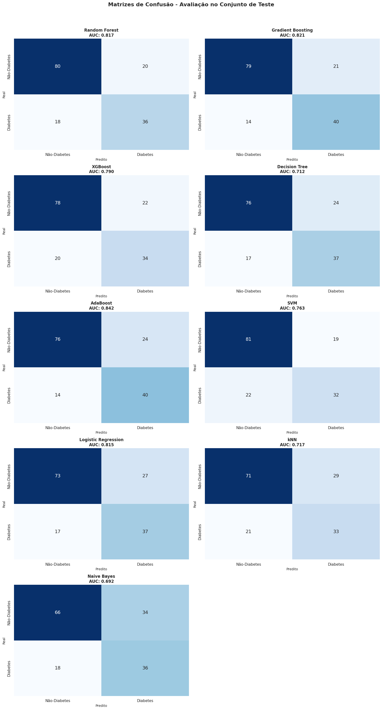

Fonte: elaborado pelo autor
💡 Clique na imagem para ativar o zoom; clique novamente para desativar.
•
Métricas iniciais: comparação de performance entre diferentes algoritmos de machine learning
•
Baseline: estabelecimento dos resultados de referência para análise comparativa